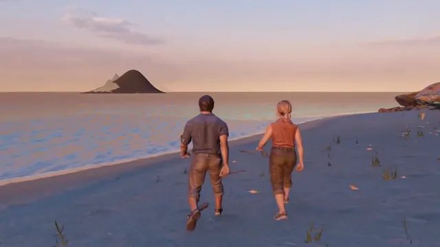
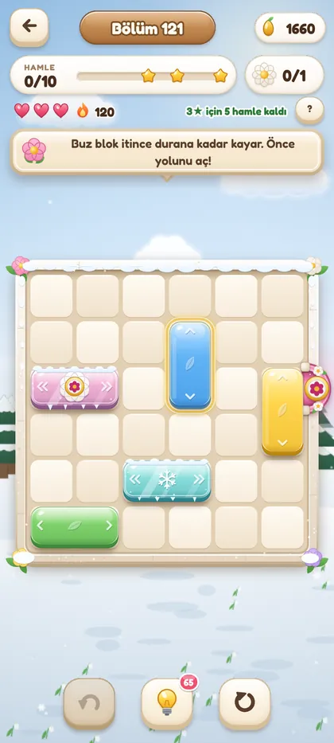
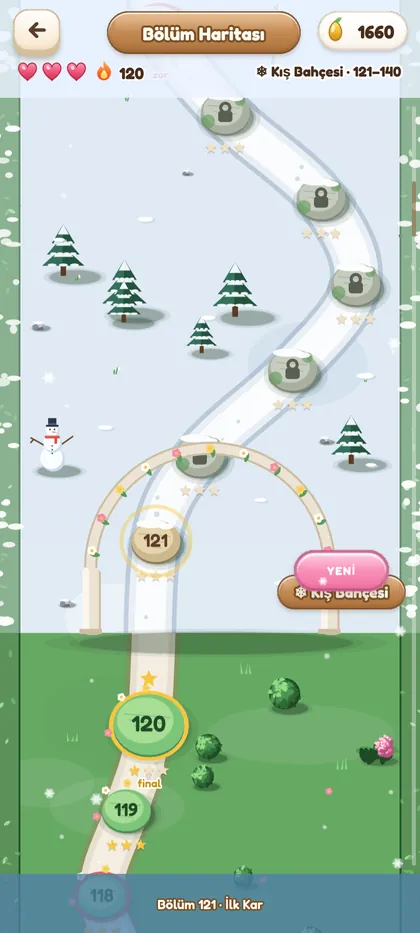
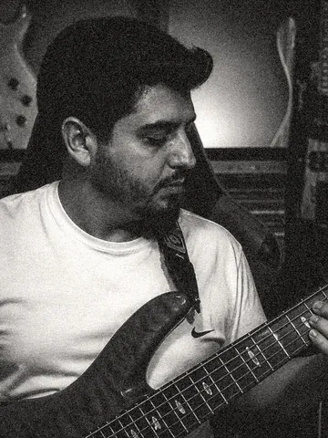
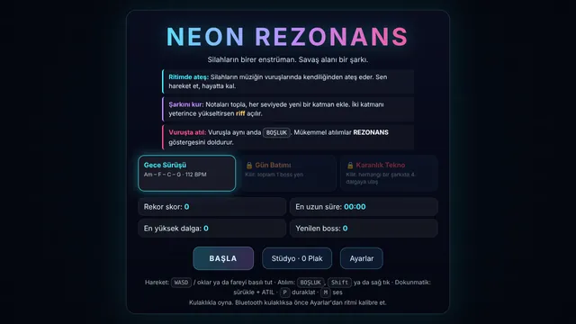
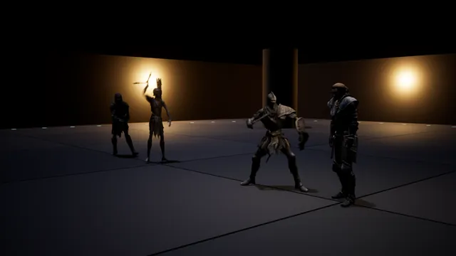
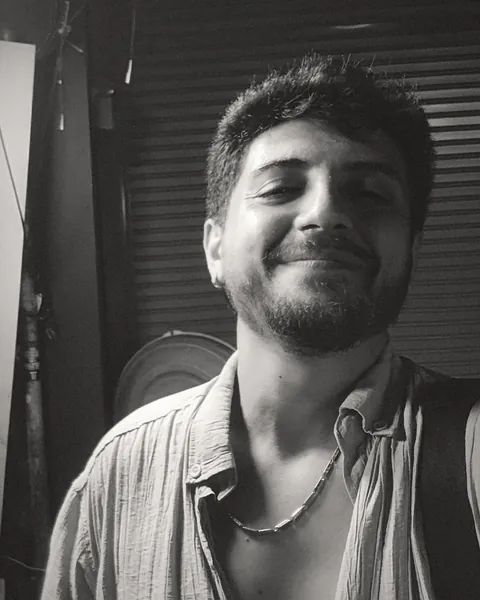

Music producer, mix and mastering engineer, music educator and solo game developer.
I make music and games, and I build the system I make them with.
Unpacking on stage the selves we compress in daily life: the idea that named my first band in 2007, and it is still the idea today.
Listen
-
Aldırma Gönül
Edip Akbayram cover: bağlama and electric guitar

Büyük Ev / Siyabend
Mashup with Ekin Tutkun: bass guitar

Halimem
Folk song cover: guitar and vocals
 Watch on Instagram (opens in a new tab)
Watch on Instagram (opens in a new tab)
Atmaca
Bass guitar cover
Playing loads the video from YouTube.
ShowcaseFour things are on my desk today; all four come out of the same studio.

In development (not released, tested at home)Last worked on:
Issız Ada
I wanted a game I could play with someone I love, from two separate computers.

In development (phone pilot, not in stores)Last worked on:
Bloomslide
Slide the blocks with one finger; every level you solve adds something to your garden.

Working (for my own use, not a product)Last worked on:
THRENOS STÜDYO
Two computers and a dozen models at one desk: the hub that spreads my work out and has the result checked.
ReleasedLast worked on:
Music and sound
From bass to vocals, from stage to studio: my recordings and the work I did for others.
In development (not released, tested at home)Last worked on:
Issız Ada
I am building this game alone, in Godot. A plane goes down on an island; Sarp and Defne gather the wreckage, build a shelter, light a fire and learn to live there together. The devlog music is mine too. It has been playtested; it is not in stores.
Watch: devlog #1 (opens in a new tab)Listen: my recordings


In development (phone pilot, not in stores)Last worked on:
Bloomslide
I designed Bloomslide as a calm phone puzzle played with one finger. The phone pilot ran with 120 validated levels.


- A level only ships after it passes automatic validation
- Internal build 1.1.0: 20 new levels in a winter region and a sliding ice block
- Saves stay on the phone; no accounts, no servers
Working (for my own use, not a product)Last worked on:
THRENOS STÜDYO
I built Masa myself to run my two computers as one production hub: my Windows PC and my Mac mini. When I give it a job, a planning model splits it into parts; the parts go to local and free models first, and to paid models only when needed. Separate reviewer agents check the result, and every step that spends money, publishes or cannot be undone waits for my approval.
Masa 1.0 review October 2026
11 agents checked 60 claims one by one.
- 43 correct
- 16 partly correct
- 1 wrong
Issız Ada blind jury, round 1 October 2026
10 independent models judged the same build without knowing who made it: save safety, co-op, the test gate and performance. 21 findings are in the fix queue; the build was not released.
- 0 accept
- 6 conditional
- 4 reject


Music and sound2007 — today
From the stage to the studio,
with a bass.
I came from the stage to the studio with bass, classical and electric guitar, bağlama, keyboard and vocals. I record, mix and master in my own studio, and I have taught for about 15 years.
The recording in the photoAtmaca — bass guitar coverListen
Credits
Work I did for others. My own recordings are in the Listen strip.
- Tadımlık 1 — Issız Ada devlog #1 (opens in a new tab) Music
- Pınar Göktaş ve Kedi — İki Günlük Dünya (opens in a new tab) Mastering
- Ekin Tutkun — Yaşamak Bu Değil (opens in a new tab) Mixing and mastering
- 100th Anniversary Republic Concert — 1st Army Regional Band Command with Marmara University, 26 October 2023 (opens in a new tab) Bass guitar
- Ne Var Ki — Hamdım Piştim (opens in a new tab) Bass guitar
Sound for your song, your record or your game.
- Music production
- Mixing and mastering
- Game music and sound
Music production, mixing and mastering, game music and sound design. One message is enough for prices and dates.
Message me on Instagram (opens in a new tab)See the services
Lab
I keep my unfinished work here: the first experiments from when I learned to build with AI.

Prototype (not released)Last worked on:
Neon Rezonans
A single-file rhythm-action experiment where the weapons are instruments.

Prototype (not released)Last worked on:
Son Efe: Kırılma
A 3D strategy experiment that runs in the browser: gather, raise, defend.

Prototype (not released)Last worked on:
Sagu
A dark action-RPG experiment in Unreal Engine 5: an armored battle mage and his wolf, Fenrir.
Journey
I lay my story out like a recording session: five channels, from 2007 to today. Scroll down and the playhead moves.
-
2007–2009
The start
In 2007 I started in the band İdrar (later ID.rar) on vocals and keyboard, and picked up classical and electric guitar the same year. I also passed the fine arts high school talent exam, placing third among 800 candidates with no prior training. My first regular stage began at Anadolu Rock Bar.
The stage taught me timing and the listener.
- İdrar (later ID.rar): vocals and keyboard
- Fine arts high school talent exam: third of 800
- Anadolu Rock Bar, Aydın
-
2009–2016
Education and İzmir
In 2009 I placed first in the music teaching entrance exam at Adnan Menderes University (ADÜ) and also studied Music Education at Dokuz Eylül University (transfer). In 2013–2014 I played foreign repertoire at Drunken Duck in İzmir. In 2016 I placed first in the same exam again.
Teaching taught me how to describe a job to someone else.
- ADÜ music teaching entrance exam: first
- Drunken Duck, İzmir
- ADÜ exam: first again
-
2016–2020
Studio and bass
From 2016 to 2020 I performed at Şapıldak Bar in Aydın. In 2019 I set up my own studio: recording, mixing, mastering and teaching. In 2020 I took lessons from Salih Yeniev, bassist for Evrencan Gündüz, and bass became my main stage instrument.
The studio taught me to finish: a job is not done until it is delivered.
- Şapıldak Bar, Aydın
- My own studio: recording, mixing, mastering, teaching
- Bass lessons with Salih Yeniev
-
2022–2023
Bands and the army band
Around 2022 I played bass and sang backing vocals in Şirket; we brought İdrar back together as ID.rar, this time with me on vocals and bass. We played jazz at Collective with a female vocalist, keys and saxophone. The bass on Ne Var Ki's single "Hamdım Piştim" is mine. In 2023, during military service, I played bass guitar in the 1st Army Regional Band Command. I read a repertoire of about 100 works in bass clef: pieces by Jacob de Haan, music from Interstellar and other orchestral arrangements. On 26 October 2023 I played the 100th Anniversary Republic Concert with Marmara University. I was also with the band at the Republic's 100th-anniversary ceremonies.
The army band taught me to read from the page and to know my place in a large ensemble.
- Şirket, ID.rar reunion, jazz at Collective: bass guitar (around 2022)
- Ne Var Ki — Hamdım Piştim: bass guitar recording
- 1st Army Regional Band Command: bass guitar; Marmara University concert, 100th-anniversary ceremonies
-
2025–2026
Recordings and the workshop
In 2025 I released my own covers and mashups; I mixed and mastered Ekin Tutkun's "Yaşamak Bu Değil" and mastered "İki Günlük Dünya" by Pınar Göktaş ve Kedi. In August–September 2026, my first game and software experiments with AI: a strategy game in the browser and a single-file rhythm game. On 29 September, the first Threnos Games devlog. In October 2026 I had Masa reviewed and took Bloomslide to a phone pilot.
The workshop taught me to bring everything I know to one desk.
- Cover and mashup recordings
- Ekin Tutkun — Yaşamak Bu Değil: mixing and mastering
- Pınar Göktaş ve Kedi — İki Günlük Dünya: mastering
- First game and software experiments with AI
- Threnos Games: first devlog
- Masa 1.0 (THRENOS STÜDYO): review by 11 agents
- Bloomslide: phone pilot with 120 validated levels
Education
- Aydın Adnan Menderes University, Music Teaching (graduate)
- Dokuz Eylül University, Music Education (transferred)
- Yüksel Yalova Fine Arts High School
Services and contact
There are three ways to work with me: a record, a collaboration, or a short message.
Music
Production
We take a song from idea to finished record together.
Recording
Vocal and instrument recording in my own studio.
Mixing and mastering
For your own recording or one we make in the studio.
Lessons
Guitar, bass, bağlama, vocals, piano and ear training. In person or online; in Turkish or English.
Collaboration
Sound and music for games
Music, sound design and recording.
Game development
From prototype to playable build in Godot.
AI production workflows
Setting up a multi-model workflow with review and approval steps.

Contact
The fastest way is a message on Instagram. Write to me for prices and dates.
Send a message on Instagram (opens in a new tab)